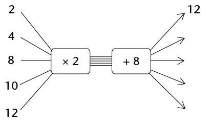
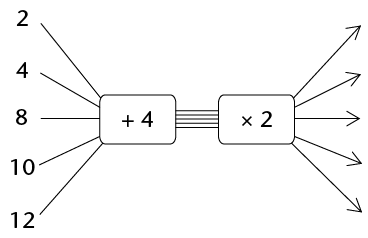

Chapter algebraic expressions
In this chapter, you will learn about simplifying algebraic expressions by expanding them. Expanding an algebraic expression allows you to change the form of an expression without changing the output values it gives.
Rewriting an expression in a different form can be useful for simplifying calculations and comparing expressions. We use two main tools to simplify expressions: we combine like terms and/or use the distributive property.
Expanding algebraic expressions
Multiply often or multiply once: it is your choice
-
- Calculate \(5 \times 13\) and \(5 \times 87\) and add the two answers.
- Add 13 and 87, and then multiply the answer by 5.
- If you do not get the same answer for questions 1(a) and 1(b), you have made a mistake. Redo your work until you get it right.
- Calculate \(5 \times 13\) and \(5 \times 87\) and add the two answers.
The word distribute means "to spread out". The distributive properties may be described as follows:
\(a(b + c) = ab +ac\) and
\(a(b - c) = ab -ac\) and
where \(a\), \(b\) and \(c\) can be any numbers.
The fact that, if you work correctly, you get the same answer for questions 1(a) and 1(b) is an example of a certain property of addition and multiplication called the distributive property. You use this property each time you multiply a number in parts. For example, you may calculate \(3 \times 24\) by calculating
\(3 \times 20\) and \(3 \times 4\), and then add the two answers:
\(3 \times 24 = 3 \times 20 + 3 \times 4\)
What you saw in question 1 was that \(5 \times 100 = 5 \times 13 + 5 \times 87\).
This can also be expressed by writing \(5(13 + 87)\).
-
- Calculate \(10 \times 56\).
- Calculate \(10 \times 16 + 10 \times
40\).
- Calculate \(10 \times 56\).
- Write down any two numbers smaller than
100. Let us call them \(x\) and \(y\).
- Add your two
numbers, and multiply the answer by 6.
- Calculate \(6 \times x\) and \(6 \times
y\) and add the two answers.
- If you do not get the same answers for (a) and (b) you have made a mistake somewhere. Correct your work.
- Add your two
numbers, and multiply the answer by 6.
- Complete the table.
-
\(x\)
1
2
3
4
5
\(3(x + 2)\)
\(3x + 6\)
\(3x + 2\)
\(3(x - 2)\)
\(3x - 6\)
\(3x - 2\)
- If you do not get the same answers for the expressions \(3(x + 2)\) and \(3x + 6\), and for \(3(x-2)\) and \(3x -6\), you have made a mistake somewhere. Correct your work.
In algebra we normally write \(3(x + 2)\) instead of \(3 \times (x + 2)\). The expression \(3 \times (x + 2)\) does not mean that you should first multiply by 3 when you evaluate the expression for a certain value of \(x\). The brackets tell you that the first thing you should do is add the value(s) of \(x\) to 2 and then multiply the answer by 3.
However, instead of first adding the values within the brackets and then multiplying the answer by 3 we may just do the calculation \(3 \times x + 3 \times 2 = 3x + 6\) as shown in the table.
- Which expressions amongst those given in
the table are equivalent? Explain.
- For what value(s) of \(x\) is
\(3(x + 2) = 3x + 2\)?
- Try to find a value of \(x\) such
that \(3(x + 2) \neq 3x + 6\).
-
If multiplication is the last step in evaluating an algebraic expression, then the expression is called a product expression or, briefly, a product. The way you evaluated the expression \(3(x + 2)\) in the table is an example of a product expression.
-
- Determine the value of
\(5x + 15\) if \(x = 6\).
- Determine the value of
\(5(x + 3)\) if \(x = 6\).
- Can we use the expression \(5x + 15\)
to calculate the value of \(5(x + 3)\) for any values of
x? Explain.
- Determine the value of
\(5x + 15\) if \(x = 6\).
- Complete the flow
diagrams.
-

-

-

-

-

-
-
- Which of the above flow diagrams
produce the same output numbers?
- Write an algebraic expression for each
of the flow diagrams in question 6.
- Which of the above flow diagrams
produce the same output numbers?
Product expressions and sum expressions
- Complete the following:
- \( (3 + 6) + (3 + 6) + (3 + 6) + (3 + 6) + (3 + 6) \\ = \text{______} \times \text{(____________)} \)
- \( (3 + 6) + (3 + 6) + (3 + 6) + (3 + 6) + (3 + 6) \\ = (3 + 3 + \text{______}) + \text{(__________________)} \\ \text{(______} \times \text{______)} \text{(______} \times \text{______)} \)
- Complete the following:
- \((3x + 6) + (3x + 6) + (3x + 6) + (3x + 6) + (3x + 6) \\ = \text{______} \times \text{(____________)} \)
- \( (3x + 6) + (3x + 6) + (3x + 6) + (3x + 6) + (3x + 6) \\ = (3x + 3x \text{______}) + \text{(__________________)} \\ \text{(______} \times \text{______)} \text{(______} \times \text{______)} \)
- In each case, write an
expression without brackets that will give the same results as
the given expression.
- \(3(x + 7)\)
- \(10(2x + 1)\)
- \(x(4x + 6)\)
- \(3(2p + q)\)
- \(t(t + 9)\)
- \(x(y + z)\)
- \(2b(b + a - 4)\)
- \(k^2(k - m)\)
- \(3(x + 7)\)
The process of writing product expressions as sum expressions is called expansion. It is sometimes also referred to as multiplication of algebraic expressions.
-
- Complete the table for the given
values of \(x,~y\) and \(z\).
\(3(x + 2y + 4z)\)
\(3x + 6y + 12z\)
\(3x + 2y + 4z\)
\(x = 1\)
\(y = 2\)
\(z = 3\)
\(x = 10\)
\(y = 20\)
\(z = 30\)
\(x = 23\)
\(y = 60\)
\(z = 100\)
\(x = 14\)
\(y = 0\)
\(z = 1\)
x = 5
\(y = 9\)
\(z = 32\)
- Which sum expression and product
expression are equivalent?
- Complete the table for the given
values of \(x,~y\) and \(z\).
- For each expression, write an
equivalent expression without brackets.
- \(2(x^2 + x + 1)\)
- \(p(q + r + s)\)
- \(-3(x + 2y + 3z)\)
- \(x(2x^2 + x + 7)\)
- \( 6x(8 - 2x)\)
- \(12x(4 - x)\)
- \(3x(8x - 5) - 4x(6x - 5)\)
- \(10x(3x(8x - 5) - 4x(6x - 5))\)
- \(2(x^2 + x + 1)\)
Simplifying algebraic expressions
Expand, rearrange and then combine like terms
- Write the shortest possible
equivalent expression without brackets.
- \(x + 2(x + 3) \)
- \(5(4x + 3) + 5x\)
- \(5(x + 5) + 3(2x + 1) \)
- \((5 + x)^2\)
- \(-3(x^2 + 2x - 3) + 3(x2 + 4x)\)
- \(x(x - 1) + x + 2\)
- \(x + 2(x + 3) \)
When you are not sure whether you simplified an expression correctly, you should always check your work by evaluating the original expression and the simplified expression for some values of the variables.
-
- Evaluate \(x(x + 2) + 5x^2 - 2x\) for \(x = 10\).
- Evaluate \(6x^2\) for \(x = 10\).
- Can we use the expression \(6x^2\) to calculate the values of the expression \(x(x + 2) + 5x^2 - 2x\) for any given value of \(x\)? Explain.
- Evaluate \(x(x + 2) + 5x^2 - 2x\) for \(x = 10\).
This is how a sum expression for \(x(x + 2) + 5x^2 - 2x\) can be made:
\( \begin{align} x(x + 2) + 5x^2 - 2x &= x \times x + x \times 2 + 5x^2 - 2x \\ & = x^2 + 2x + 5x^2 - 2x \\ &= x^2 + 5x^2 + 2x - 2x \text{ [Rearrange and combine like terms]} \\ &= 6x^2 + 0 \\ &= 6x^2 \end{align}\)
- Evaluate the following expressions for \(x = -5\):
- \( x + 2(x + 3)\)
- \(5(4x + 3) + 5x\)
- \(5(x + 5) + 3(2x + 1)\)
- \((5 + x)^2\)
- \(-3(x^2 + 2x - 3) + 3(x^2 + 4x)\)
- \(x(x - 1) + x + 2\)
- \( x + 2(x + 3)\)
- Complete the table for the
given values of \(x,~y\) and \(z\).
\(x\)
100
80
10
20
30
\(y\)
50
40
5
5
20
\(z\)
20
30
2
15
10
\(x + (y - z)\)
\(x - (y - z)\)
\(x - y -z\)
\(x - (y + z)\)
\(x + y - z\)
\(x - y + z\)
- Say whether the
following statements are true or false. Refer to the table in
question 4.For any values of \(x,~y\) and \(z\):
- \( x + (y - z) = x + y-z\)
- \(x - (y - z) = x - y - z\)
- \( x + (y - z) = x + y-z\)
- Write the expressions without
brackets. Do not simplify.
- \( 3x - (2y + z)\)
- \( -x + 3(y - 2z)\)
- \( 3x - (2y + z)\)
We can simplify algebraic expressions by using properties of operations as shown:
\(x - (y +z) = x - y - z\)
Addition is both associative and commutative.
\((5x + 3) - 2(x + 1)\)
Hence \(5x + 3 - 2x - 2\)
Hence \(5x - 2x + 3 - 2\)
Hence \(3x + 1\)
- Write an equivalent
expression without brackets for each of the following
expressions and then simplify:
- \(22x + (13x - 5) \)
- \( 22x - (13x - 5)\)
- \(22x - (13x + 5) \)
- \(4x - (15 - 6x) \)
- \(22x + (13x - 5) \)
- Simplify.
- \(2(x^2 + 1) - x - 2 \)
- \(-3(x^2 + 2x - 3) + 3x^2 \)
- \(2(x^2 + 1) - x - 2 \)
Here are some of the techniques we have used so far to form equivalent expressions:
- Remove brackets
- Rearrange terms
- Combine like terms
Simplifying quotient expressions
From quotient expressions to sum expressions
- Complete the table for the
given values of x.
\(x\)
1
7
-3
-10
\(7x^2 + 5x\)
\(\frac{7x^2 + 5x}{x}\)
\(7x + 5\)
\(7x + 5x\)
\(7x^2 + 5\)
-
- What is the value of \(7x + 5\)
for \(x = 0\)?
- What is the value of \(\frac{7x^2 + 5x}{x}\) for \(x = 0\)?
- Which of the two expressions, \(7x + 5\) or
\(\frac{7x^2 + 5x}{x}\), requires fewer calculations?
Explain.
- Are the expressions \(7x + 5\) and \(\frac{7x^2 + 5x}{x}\) equivalent, \(x = 0\) excluded? Explain.
- Are there any other expressions that are
equivalent to \(\frac{7x^2 + 5x}{x}\) from those given in the table?
Explain.
- What is the value of \(7x + 5\)
for \(x = 0\)?
If division is the last step in evaluating an algebraic expression, then the expression is called a quotient expression or an algebraic fraction.
The expresion \(\frac{7x^2+5x}{x}\) is an example of a quotient expression or algebraic fraction.
- Complete the table for the
given values of \(x\).
\(x\)
\(5\)
\(10\)
\(-5\)
\(-10\)
\(10x - 5x^2\)
\(5x\)
\(\frac{10x - 5x^2}{5x}\)
\(2 - x\)
- What is the value of \(2 - x\) for
\(x = 0\)?
- What is the value of \( \frac{10x - 5x^2}{5x}\) for \(x = 0\)?
- Are the expressions \(2 - x\) and \( \frac{10x - 5x^2}{5x}\) equivalent, \(x = 0\) excluded? Explain.
- Which of the two expressions \(2 -
x\) or \( \frac{10x - 5x^2}{5x}\) requires fewer calculations? Explain.
- What is the value of \(2 - x\) for
\(x = 0\)?
We have found that quotient expressions such as \( \frac{10x - 5x^2}{5x}\) can sometimes be manipulated to give equivalent expressions such as \(2 - x\).
The value is that these equivalent expressions require fewer calculations.
The expressions \( \frac{10x - 5x^2}{5x}\) and \(2-x\) are not quite equivalent because for \(x =0\), the value of \(2 -x\) can be calculated, while the first expression has no value.
However, we can say that the two expressions are equivalent if they have the same values for all values of \(x\) admissible for both expresssions.
How is it possible that \( \frac{7x^2 + 5x}{x} = 7x + 5\) and \( \frac{10x - 5x^2}{5x} = 2 - x\) for all admissible values of \(x\)? We say \(x = 0\) is not an admissible value of \(x\) because division by 0 is not allowed.
One of the methods for finding equivalent expressions for algebraic fractions is by means of division:
\( \begin{align} \frac{7x^2 + 5x}{x} &= \frac{1}{x}(7x^2 +5x) &&\text{[just as } \frac{3}{5} = 3 \times \frac{1}{5} {]} \\ &= (\frac{1}{x} \times 7x^2)+ (\frac{1}{x} \times 5x) && \text{[distributive property]} \\ &= \frac{7x^2}{x} + \frac{5x}{x} \\ &= 7x + 5 &&\text{[provided } x \neq 0 {]} \end{align} \)
- Use the method shown above to simplify each fraction below.
- \(\frac{8x+10z+6}{2}\)
- \(\frac{20x^2 + 16x}{4}\)
- \(\frac{9x^2y +xy}{xy}\)
- \(\frac{21ab - 14a^2}{7a}\)
- \(\frac{8x+10z+6}{2}\)
Simplifying a quotient expression can sometimes lead to a result which still contains quotients, as you can see in the example below.
\( \begin{align} & \frac{5x^2 + 3x}{x^2} \\ &=\frac{5x^2}{x^2} + \frac{3x}{x^2} \\ & = 5 + \frac{3}{x} \end{align} \)
-
- \(\frac{5x^2 + 3x}{x^2}\) for \(x = -1\).
- For the expression \(\frac{5x^2 + 3x}{x^2}\) to be equivalent to \(5 + \frac{3}{x}\) which value of x must be excluded?
Why?
- \(\frac{5x^2 + 3x}{x^2}\) for \(x = -1\).
- Simplify the following
expressions:
- \(\frac{8x^2 + 2x + 4}{2x}\)
- \(\frac{4n + 1}{n}\)
- \(\frac{8x^2 + 2x + 4}{2x}\)
- Evaluate:
- \(\frac{8x^2 + 2x + 4}{2x}\) for \(x = 2\)
- \(\frac{4n + 1}{n}\) for \(n = 4\)
- \(\frac{8x^2 + 2x + 4}{2x}\) for \(x = 2\)
- Simplify.
- \(\frac{6x^4 - 12x^3 + 2}{2x}\)
- \(\frac{-6n^4 - 4n}{6n}\)
- \(\frac{6x^4 - 12x^3 + 2}{2x}\)
- When Natasha and
Lebogang were asked to evaluate the expression \(\frac{x^2 + 2x + 1}{2x}\) for \(x = 10\), they did it in
different ways.
Natasha's calculation: \(10 + 2 + \frac{1}{10} \\ =12\frac{1}{10} \)
Lebogang's calculation: \(\frac{100 + 20 + 1}{10} \\ =\frac{121}{10} \\ =12\frac{1}{10} \)
Explain how each of them thought about evaluating the given expression.
Squares, cubes and roots of expressions
Simplifying squares and cubes
Study the following example:
\((3x)^2 = 3x \times 3x\)
Meaning of squaring
\(= 3 \times x \times 3 \times x\)
\(= 3 \times 3 \times x \times x\)
Multiplication is commutative: \(a \times b = b \times a\)
\(= 9x^2\)
We say that \((3x)^2\) simplifies to \(9x^2\)
- Simplify the expressions.
- \((2x)^2\)
- \((2x^2)^2\)
- \((-3y)^2\)
- \((2x)^2\)
- Simplify the expressions.
- \(25x - 16x\)
- \(4y + y + 3y\)
- \(a + 17a - 3a\)
- \(25x - 16x\)
- Simplify.
- \((25x - 16x)^2\)
- \((4y + y + 3y)^2\)
- \((a + 17a - 3a)^2\)
- \((25x - 16x)^2\)
Study the following example:
\((3x)^3 = 3x \times 3x \times 3x\)
Meaning of cubing
\(= 3 \times x \times 3 \times x \times 3 \times x\)
\(= 3 \times 3 \times 3 \times x \times x \times x\)
Multiplication is commutative: \(a \times b = b \times a\)
\(= 27x^3\)
We say that \((3x)^3\) simplifies to \(27x^3\)
- Simplify the following:
- \((2x)^3\)
- \((-x)^3\)
- \((5a)^3\)
- \((7y^2)^3\)
- \((-3m)^3\)
- \((2x^3)^3\)
- \((2x)^3\)
- Simplify.
- \(5a - 2a\)
- \(7x + 3x \)
- \(4b + b\)
- \(5a - 2a\)
- Simplify.
- \((5a - 2a)^3\)
- \((7x + 3x)^3 \)
- \((4b + b)^3\)
- \((13x - 6x)^3\)
- \((17x + 3x)^3 \)
- \((20y - 14y)^3\)
- \((5a - 2a)^3\)
Always remember to test whether the simplified expression is equivalent to the given expression for at least three different values of the given variable.
Square and cube roots of expressions
- Thabang and his friend Vuyiswa
were asked to simplify \( \sqrt{2a^2 \times 2a^2}\).
Thabang reasoned as follows:
To find the square root of a number is the same as asking yourself the question: "Which number was multiplied by itself?" The number that is multiplied by itself is \(2a^2\) and therefore \( \sqrt{2a^2 \times 2a^2} = 2a^2\)
Vuyiswa reasoned as follows:
I should first simplify \(2a^2 \times 2a^2\) to get \(4a^4\) and then calculate \( \sqrt{4a^4} = 2a^2\)
Which of the two methods do you prefer? Explain why.
- Say whether each of the
following is true or false. Give a reason for your answer.
- \( \sqrt{6x \times 6x} = 6x\)
- \( \sqrt{5x^2 \times 5x^2} = 5x^2\)
- \( \sqrt{6x \times 6x} = 6x\)
- Simplify.
- \(y^6 \times y^6\)
- \(125x^2 + 44x^2\)
- \(y^6 \times y^6\)
- Simplify.
- \(\sqrt{y^{12}}\)
- \(\sqrt{125x^2 + 44x^2}\)
- \(\sqrt{25a^2 - 16a^2}\)
- \(\sqrt{121y^2}\)
- \(\sqrt{16a^2 + 9a^2}\)
- \(\sqrt{25a^2 - 9a^2}\)
- \(\sqrt{y^{12}}\)
- What does it mean to find the cube root of \(8x^3\) written as \(\sqrt[3]{8x^3}\)?
- Simplify the following:
- \(2a \times 2a \times 2a\)
- \(10b^3 \times 10b^3 \times 10b^3\)
- \(2a \times 2a \times 2a\)
- \(3x^3 \times 3x^3 \times 3x^3\)
- \(-3x^3 \times -3x^3 \times -3x^3\)
- Determine the following:
- \(\sqrt[3]{1000b^9}\)
- \(\sqrt[3]{2a \times 2a \times 2a}\)
- \(\sqrt[3]{27x^3}\)
- \(\sqrt[3]{-27x^3}\)
- \(\sqrt[3]{1000b^9}\)
- Simplify the following
expressions:
- \(6x^3 + 2x^3\)
- \(-m^3 - 3m^3 - 4m^3\)
- \(6x^3 + 2x^3\)
- Determine the following:
- \(\sqrt[3]{6x^3 + 2x^3}\)
- \(\sqrt[3]{-8m^3}\)
- \(\sqrt[3]{125y^3}\)
- \(\sqrt[3]{93a^3 + 123a^3}\)
- \(\sqrt[3]{6x^3 + 2x^3}\)
- Simplify the following:
- \(2(3b + 1) + 4\)
- \(6 - (2 + 5e)\)
- \(18mn + 22mn + 70mn\)
- \(4pqr + 3 + 9pqr\)
- \(2(3b + 1) + 4\)
- Evaluate each of the following
expressions for \(m = 10\):
- \(3m^2 + m + 10\)
- \(5(m^2 - 5) + m^2 + 25\)
- \(3m^2 + m + 10\)
-
- Simplify: \( \frac{4b + 6}{2}\)
- Evaluate the expression \( \frac{4b + 6}{2}\) for \(b = 100\).
- Simplify: \( \frac{4b + 6}{2}\)
- Simplify
- \((4g)^2\)
- \((6y)^3\)
- \((7s + 3s)^2\)
- \((4g)^2\)
- Determine the following:
- \( \sqrt{121b^2}\)
- \( \sqrt[3]{64y^3}\)
- \( \sqrt{63d^2 + 18d^2}\)
- \( \sqrt{121b^2}\)